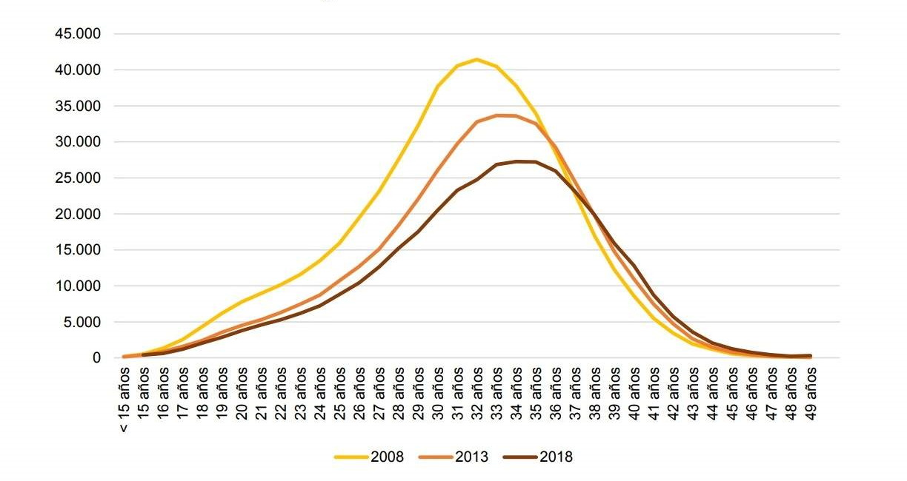

PEC 3 - Visualización de Datos
Isabel Cabezas Martin
Master Universitario Ciencia de datos de la UOC
Evolución del sueldo y de la situación laboral de la mujer entre el año 1995 y 2018.
Comparativa con el entorno europeo y análisis del entorno actual.
Otros gráficos relacionados.
Número de nacimientos según la edad de la madre

Imagen de:
Blog de Juan
Fuente:
INE